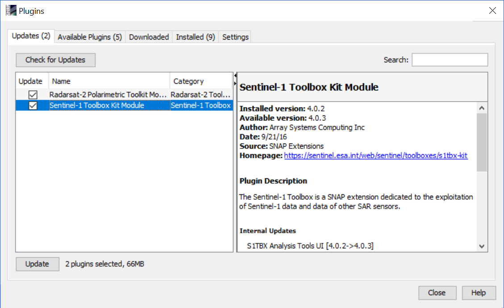
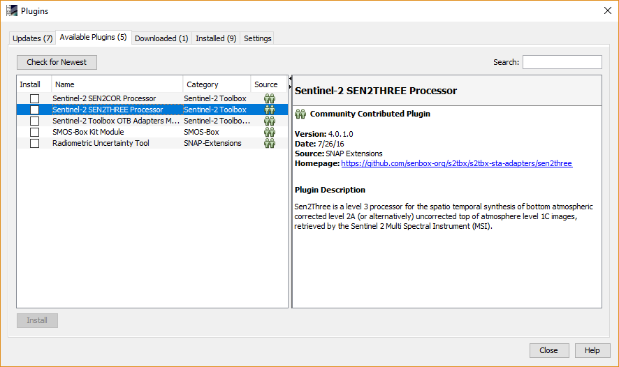
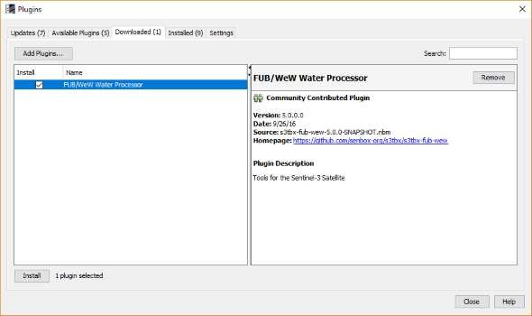
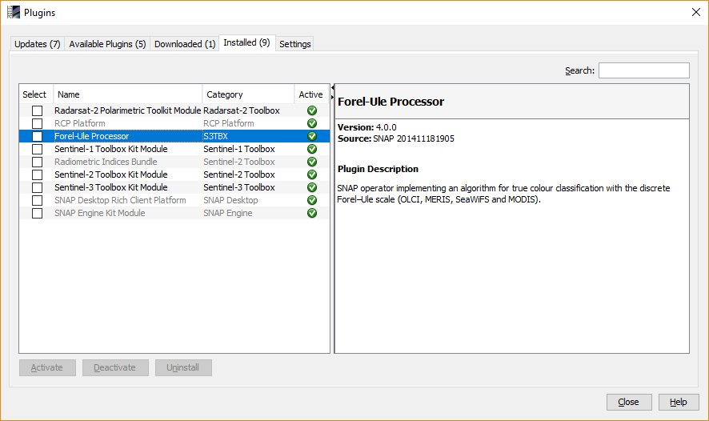
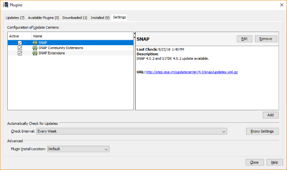

The Plugins dialog allows you to manage the already installed plugins or install new ones either from a
repository or from the local hard drive.
There are 5 different tabs available to work with the plugins. Each will be described briefly in the following.
Updates |
| In this tab all pulgins which can be updated are listed. On the right side you see the version of the currently
installed plugin and also the version of the one you can install, the description and other information. If the plugin to be updated is
a so called "Kit" module you see also the updates of the internal modules. After selecting any of the plugins on the left the update
can be performed by clicking on the button on the lower left. In most cases you are asked to restart SNAP in order to finalise the update
and activate the new plugins.
By clicking on the Button at the top left, named "Check for Updates", you can force SNAP to look for new updates on the remote server.
|

|
Available Plugins |
| In this tab all the plugins are listed which that are not yet installed. On the right side you see the description
of the Plugin and some other meta data. You can install one or multiple by marking the checkbox. If you made your selection you need to
click on "Install" at the lower left corner.
|

|
Downloaded |
| It can happen that you have been provided with a plugin file (*.nbm) which you want to install into SNAP. Just
click on "Add Plugins...". The upcoming file chooser will let you pick the plugin file from your hard drive.
plugins button at the top left corner. Then selects the required plugins.
|

|
Installed |
| This tab enables users to see which plugins are already installed. Also it is possible enable, disable and uninstall
specific plugins.
|

|
Settings |
| Plugins are downloaded from so called update centers. In this settings tab you can add new update centers or
remove existing ones. By default there are already 3 centers present. One for the basic SNAP modules and one for SNAP extensions, mainly
the toolboxes. The third one is intended to host plugins provided by the community.
Additionally you can define how often SNAP shall check for new updates and where new plugins shall be installed.
Further you have access to the proxy settings if your network requires this.
|

|